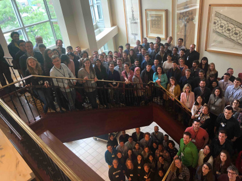

CEMS 2026

CEMS 2019
The 2026 Context and Episodic Memory Symposium (CEMS) will take place at the Study at University City hotel on May 28-29, 2026.
Venue
The venue for CEMS 2026 is at The Study at University City, located in Philadelphia, Pennsylvania. Click here to view the location on Google Maps.
Tentative Schedule
| Thursday (May 28, 2026) | Friday (May 29, 2026) | ||
|---|---|---|---|
| 8:20 AM | Breakfast & Registration | 8:20 AM | Breakfast & Registration |
| 8:50 AM | Introductory Remarks | ||
| Spoken Session 1 | Spoken Session 3 | ||
| 9:00 AM | Sean Polyn (Vanderbilt University): Capacity not required: A long-term memory model that exhibits key signatures of working memory | 9:00 AM | Jessica Wachter (University of Pennsylvania): Associative learning and representativeness |
| 9:20 AM | Morgan Barense (University of Toronto): Sleep-driven transformation of autobiographical memory | 9:20 AM | Lyulei Zhang (University of Melbourne): A single mechanism underlies the forgetting of semantic and structural representations in recognition memory |
| 9:40 AM | Eitan Schechtman (University of California - Irvine): Memory consolidation of interacting memories during sleep | 9:40 AM | Jeffrey Zacks (Washington University in St. Louis): Semantic knowledge and hierarchical event structure can scaffold memory for temporal order in younger and older adults |
| 10:00 AM | Kevin Darby (Florida Atlantic University): Disentangling retrieval of general and specific object representations through mouse-tracking and computational modeling | 10:00 AM | Berna Güler (Sabancı University): Mechanisms of event segmentation: Contextual stability during events and working memory reactivation at boundaries |
| 10:15 AM | BREAK | 10:20 AM | Aditya Upadhyayula (Washington University in St. Louis): Key moments synchronize brain activity during comprehension, support later recall, and scaffold narrative meaning |
| 10:30 AM | Poster Session 1 | 10:35 AM | BREAK |
| 10:45 AM | Poster Session 3 | ||
| 12:15 PM | LUNCH | 12:30 PM | LUNCH |
| Spoken Session 2 | Spoken Session 4 | ||
| 1:25 PM | Soroush Mirjalili (University of Oregon): Hippocampal transformations occur along dimensions of memory interference | 1:30 PM | Sudeep Bhatia (University of Pennsylvania): Search through memory structure |
| 1:45 PM | James Kragel (University of Chicago): Gaze-locked hippocampal disruption impairs memory formation | 1:50 PM | Pernille Hemmer (Rutgers University): A hierarchical Bayesian model for spatial recall |
| 2:05 PM | Bradley Lega (UT Southwestern): A proposed model of hippocampal longitudinal differentiation | 2:10 AM | Neal Morton (University of Wisconsin - Milwaukee): A distributed context maintenance and retrieval model of temporal and semantic structure in episodic memory |
| 2:25 PM | Dale Zhou (University of California - Irvine): A compressed code for memory discrimination | 2:30 AM | Weizhen Xie (University of Maryland - College Park): Shared semantic structure shapes consistent memory across people |
| 2:45 PM | Ruoyi Cao (Thomas Jefferson University): Frequency- and phase-dependent effects of theta stimulation on verbal memory in humans | 2:50 AM | Omri Raccah (Yale University): Distinct paths to false memory revealed in hundreds of narrative recalls |
| 3:00 PM | BREAK | 3:05 PM | BREAK |
| 3:15 PM | Poster Session 2 | 3:15 PM | Poster Session 4 |
| 5:00 PM | End | 5:00PM | End |
Registration
The meeting reached capacity during the early registration period and registration is now closed.
Registered attendees will receive breakfast, lunch, and refreshments on all conference days.
Cancellations before May 10 will be refunded, subject to a 10% cancellation fee. We apologize that we will not be able to provide refunds after May 10.
Past Symposia
For information about past CEMS events, please click here.